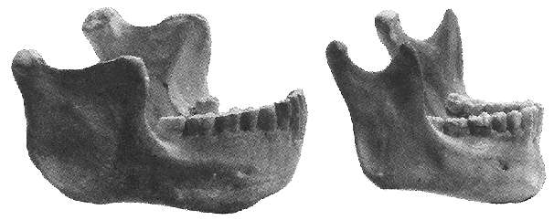

Hombre de Heidelberg

"Hombre de Heidelberg", "Mandíbula de Mauer", Homo sapiens (arcaico) (también Homo heidelbergensis)
Descubierto por trabajadores de canteras de grava en 1907 cerca de Heidelberg, en Alemania. La edad estimada está entre 400.000 y 700.000 años. Este hallazgo consistió en una mandíbula inferior con mentón retraído y todos sus dientes. La mandíbula es extremadamente grande y robusta, como la de Homo erectus, pero los dientes están en el extremo pequeño del rango de erectus. A menudo se clasifica como Homo heidelbergensis, pero también ha sido considerado a veces como un Homo erectus europeo.La fotografía anterior compara la mandíbula de Heidelberg (izquierda) con la mandíbula de un humano moderno (derecha). Basta decir que el dueño de esta mandíbula atraería definitivamente más atención que el viajero promedio en el metro de Nueva York.
Esta fotografía es de "Humankind Emerging", editado por Bernard Campbell.
Esta página es parte del FAQ de Hominidos Fósiles en el Archivo talk.origins.
Página de inicio |
Especies |
Fósiles |
Creacionismo |
Lectura |
Referencias
Ilustraciones |
Novedades |
Comentarios |
Búsqueda |
Enlaces |
Ficción
http://www.talkorigins.org/faqs/homs/mauer.html, 03/31/2001
Copyright © Jim Foley
|| Envíame un correo